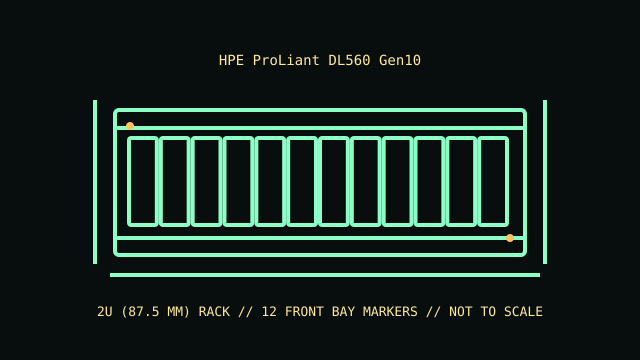

[ MODEL IDENTIFICATION // PROLIANT DL560 GEN10 // 2U FOUR-SOCKET SERVER ]
HPE ProLiant DL560 Gen10
2U (87.5 mm); 87.3 × 445.5 × 751.8 mm (H × W × D, chassis); installed options and rail/cable hardware alter required rack depth. Measure complete configuration.

REVISION CAVEAT: Storage and expansion options depend on processor count, riser population and backplane. Record the server product number and all option labels before replacing board or storage hardware.
Specifications & fit
| Catalog subcategory | Rack server enclosures |
|---|---|
| Model / board and backplane | HPE four-socket Intel Xeon Scalable system board with front cage/backplane choices for SFF or LFF drives; Smart Array/controller, cable and backplane revision determine SAS/SATA support. |
| Rack height / dimensions / rails | 2U (87.5 mm); 87.5 × 445.5 × approximately 738 mm (H × W × D, chassis body); installed options and rail/cable hardware alter required rack depth. Measure complete configuration. HPE 2U rail kits and optional cable-management arm are available for supported rack posts. Verify DL560 Gen10 rail option and full rear service depth. |
| Power supply | Up to four HPE Flexible Slot hot-plug PSU modules; supported 800 W and 1600 W units can be configured for redundant 2+2 operation or other supported power modes. Match supply count/rating to the load. |
| Drive bays | Front hot-plug chassis supports up to 24 SFF SAS/SATA drives (NVMe count depends on cage configuration); identify the backplane and controller to confirm drive interface and supported layout. |
| Expansion / risers | PCIe Gen3 riser configurations provide up to eight expansion slots in qualified builds; four-processor and storage configurations affect slot availability and card fit. |
| Cooling | Hot-plug redundant fans with configuration-specific performance levels; four-socket builds require their correct fan set, processor air baffles and blanking panels. |
| Compatibility | DL560 Gen10 four-socket system board, processor carriers, risers, fans, backplanes and Flexible Slot supplies are generation-specific. Do not infer compatibility with DL380 or DL560 Gen9/Gen10 Plus components. |
| Revision identification | Storage and expansion options depend on processor count, riser population and backplane. Record the server product number and all option labels before replacing board or storage hardware. |
Compatibility & preservation notes
DL560 Gen10 four-socket system board, processor carriers, risers, fans, backplanes and Flexible Slot supplies are generation-specific. Do not infer compatibility with DL380 or DL560 Gen9/Gen10 Plus components.
HPE 2U rail kits and optional cable-management arm are available for supported rack posts. Verify DL560 Gen10 rail option and full rear service depth. Always use the correct lifting procedure for the complete installed unit and disconnect power before service.
- Record the full model/product number, serial label, board and backplane identifiers, installed risers, PSU labels and rail-kit part number before disassembly.
- For rack servers, verify exact generation, bay/backplane, controller, riser, fan and PSU compatibility; equal rack height does not establish parts compatibility.
- Keep drive carriers, blanks, shrouds, brackets and fasteners labeled with their original chassis and position. Measure the complete chassis, rails and cable arm before rack installation.
Manufacturer manuals & product specifications
- HPE ProLiant DL560 Gen10 QuickSpecsManufacturer documentation for this exact model family; verify the machine/product number and document revision.
- HPE ProLiant DL560 Gen10 support manualsManufacturer documentation for this exact model family; verify the machine/product number and document revision.
Published dimensions and option maxima vary by build. Check the specific product number and measure the specimen before restoration, shipping or installation.